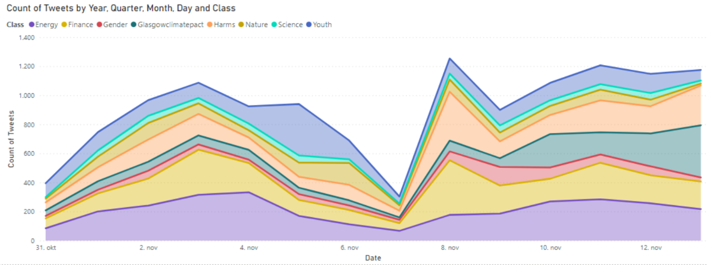

Analysing the climate debate
Climate change. It’s a highly important issue that will affect all of society. The future of society depends on what we decide to do, as individuals, businesses and governments. However, for climate action to take place, there needs to be agreement - but so often there is disagreement.
Goals:
In this project, I worked with my peers to understand the climate change debate on Twitter during the UN COP26 conference. To do so, we sought to understand:
- What topics people discussed most
- How much people agreed or disagreed in our dataset
Highlights:
- Topics discussed using supervised machine learning
- Latent Dirichlet Allocation (LDA) for undiscovered topics
- Network analysis of agreement and disagreement
Dataset
We collected multiple snowball samples of Tweets from the Twitter API related to the topic of the COP26 conference. The tweets were from 31 October to 13 November 2021, during the conference. The dataset contains: the text of the tweet, the user who posted the tweet, a time stamp, and other metadata.
Summary/Highlights
Topics Discussed
We used a sample of tweets from our dataset to hand-code tweets under the official discussion topics of COP26. Below you can see the distribution of topics in our dataset over the course of the conference. There is a dip on 7th of November, a Sunday, when the conference was not in session.
Undiscovered Topics
Using the LDA package in Python, we identified potential topics not otherwise highlighted. The limitations of LDA are that the generated topics often don’t make sense out of context and require manual investigation to interpret.

Agreement and Disagreement
To identify relations between actors, we performed a network analysis based on how people online endorsed each other using retweets. Below is a visualisation of the retweet network we produced. There is a clear divide between supporters (Antonio Guterres and others) and vocal critics (Greta Thunberg and others).